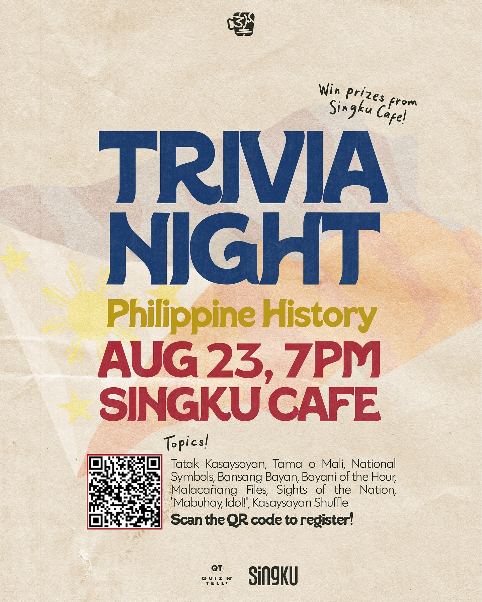
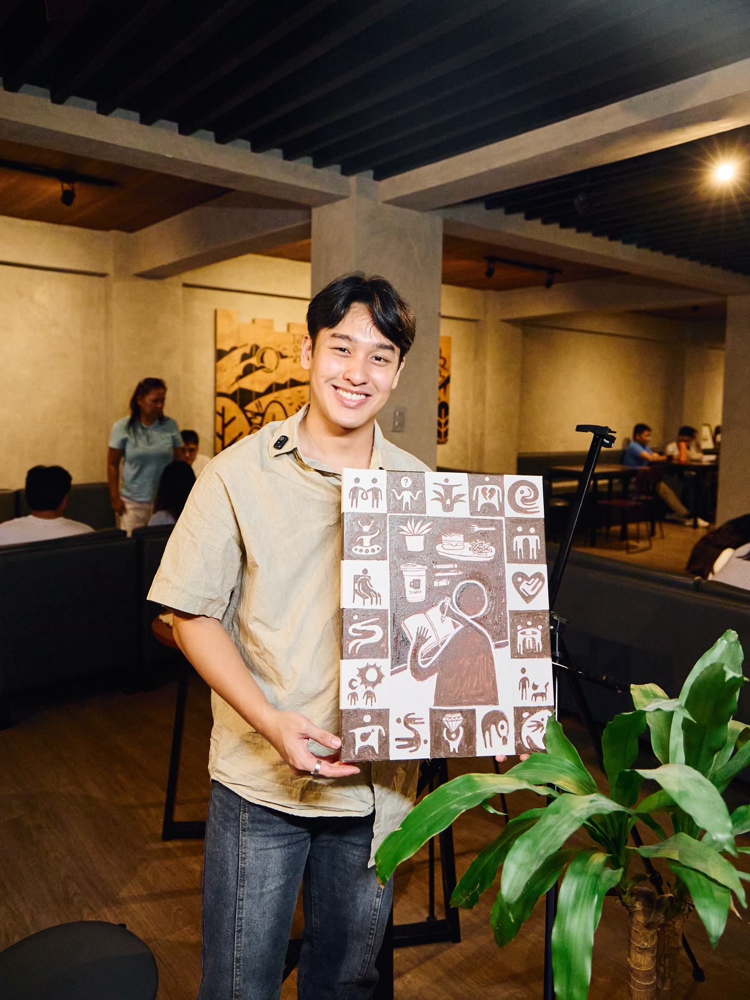
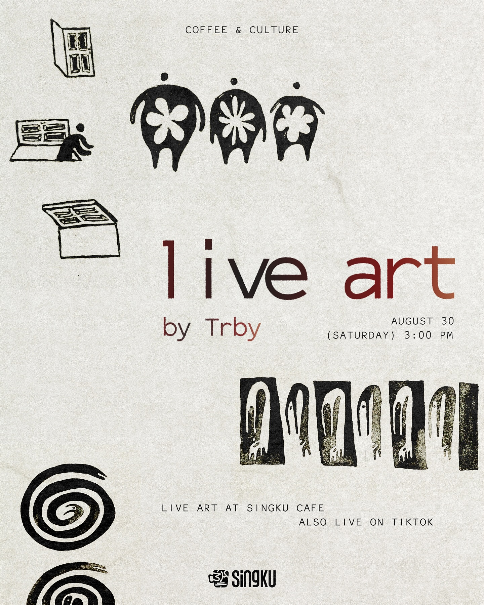
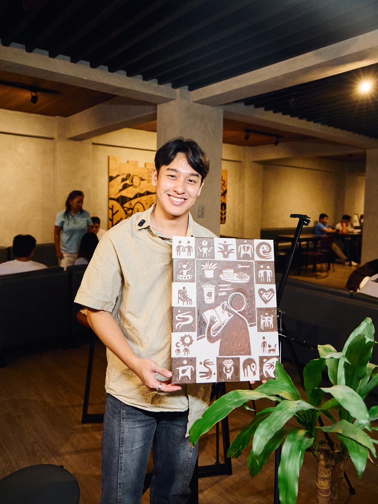
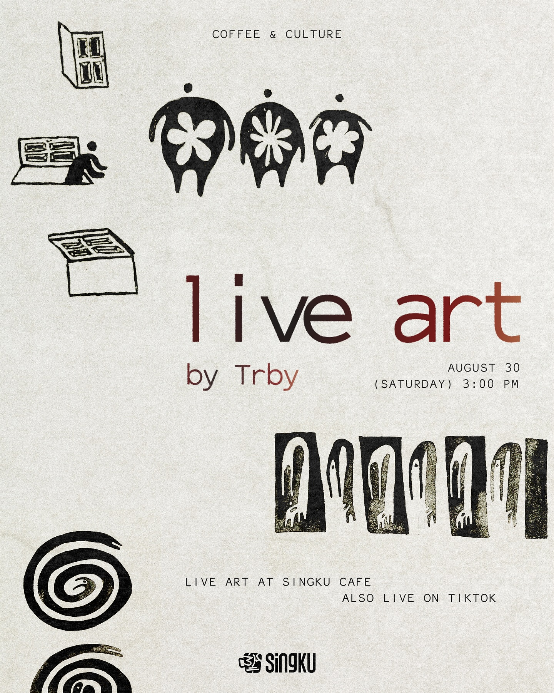
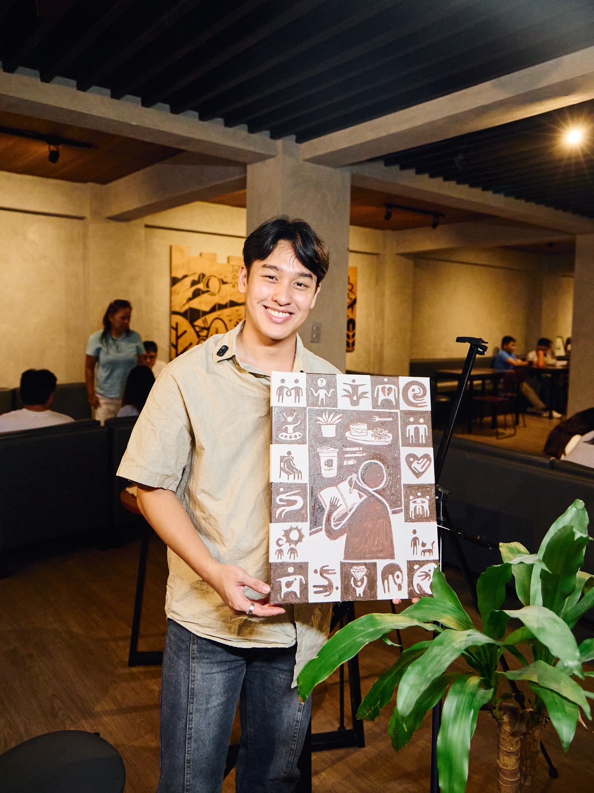
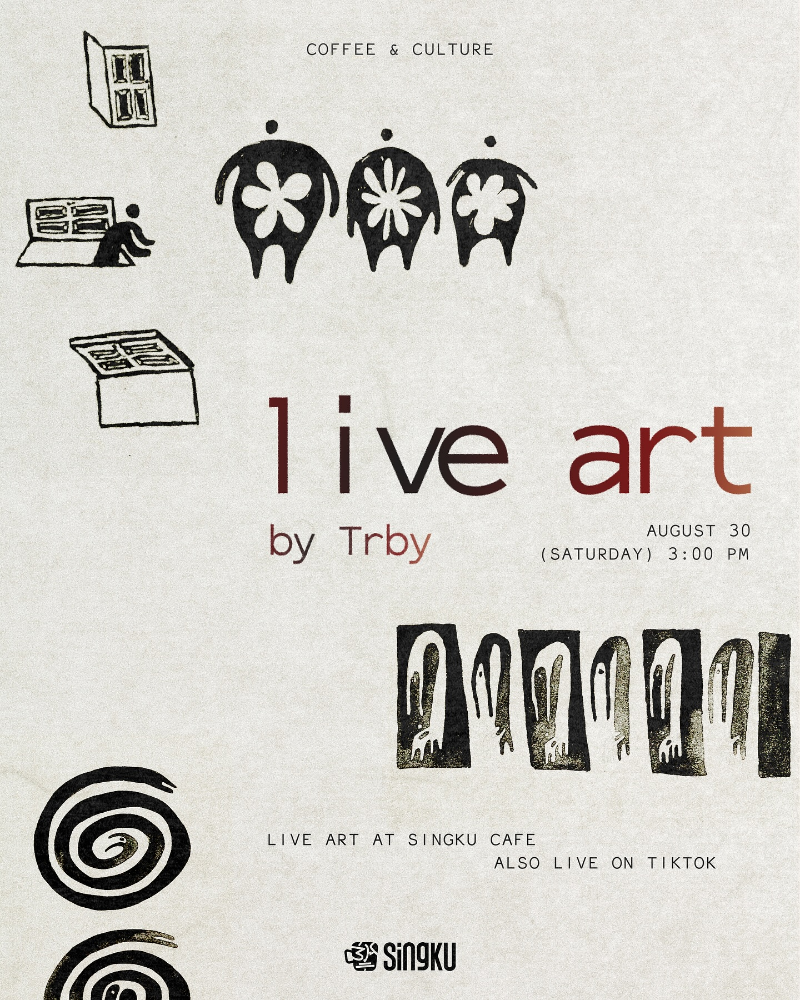

Events at Singku
At Singku, every event is crafted to spark creativity, build community, and celebrate culture. From soulful live art sessions and spoken word poetry nights to fun-filled trivia games and inspiring art print showcases, our café transforms into a hub of talent and togetherness. These events aren’t just activities — they’re shared moments that make Singku more than a café, but a space for stories, laughter, and connection.

 




